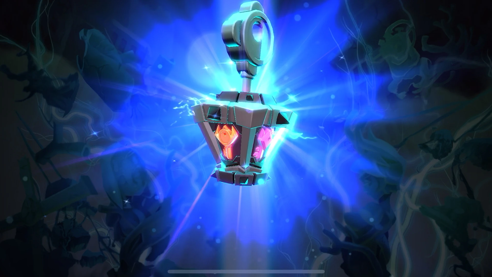

Mobile – 7.1.1, Pase Entre Bastidores de Abril y Lo Que Está Por Venir
Hola a todos, tenemos importantes actualizaciones sobre el parche 7.1.1 y el Pase Entre Bastidores de Abril.Para comenzar, el Pase Entre Bastidores de este mes, “Brillo con Probabilidad de K.O.”, trae cambios. Por primera vez en mucho tiempo, no estaremos introduciendo nuevos variantes, algo que sabemos que muchos fans no esperaban, pero no se preocupen, regresarán en mayo.
En cambio, por primera vez, los poseedores del Pase Entre Bastidores con Acceso Total que completen el recorrido recibirán como recompensa garantizada una variante brillante de Valentine General Surgeon. Este evento especial estará disponible solo este mes, así que asegúrate de obtener esta variante superpotente mientras puedas. Un recordatorio: no solo una variante brillante requiere menos recursos para potenciarse, sino que puedes transferir el brillo a una variante existente de Valentine General Surgeon y obtener los mismos beneficios.
¿Por Qué El Cambio?
Hay un par de razones: primero, hemos escuchado su feedback; hemos recibido muchos comentarios sobre que mantener el ritmo constante con las variantes puede ser un desafío. Al mismo tiempo, hemos decidido aprovechar esta oportunidad para centrarnos en actualizar nuestra base de código para que el juego pueda soportar los cambios que estamos implementando, y planeamos agregar muchas mejoras de calidad que sabemos han estado pidiendo. Aunque esto significa menos contenido nuevo este mes, nos permitirá acelerar considerablemente el desarrollo en el futuro.
¿Qué Vendrá Este Mes?
Hay mucho que esperar:
Lanzamiento de la Reliquia Clave (!!): Esta nueva reliquia ayudará a los jugadores a potenciar su colección más rápido. La Reliquia Clave será exclusiva del Pase Entre Bastidores en su debut, pero ofreceremos más formas de obtenerla en los próximos meses.
Corrección de errores y Actualizaciones de estabilidad: Abordaremos problemas de rendimiento y bloqueos.
Mejoras en la Experiencia para Nuevos Usuarios: Actualizaciones iniciales para hacer el juego más claro y acogedor para nuevos jugadores y aquellos que regresan.
